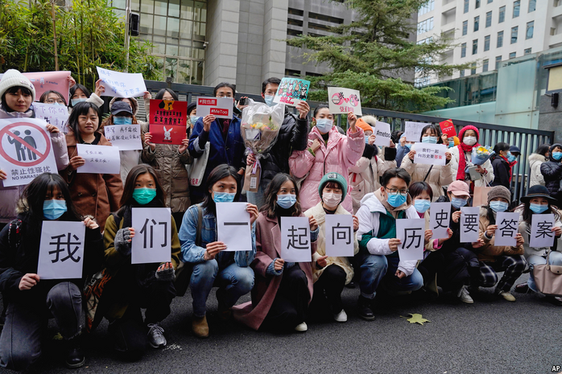

2021-01-31T13:51:18+00:00
Values, identity and activism
价值、身份和行动主义
價值、身份和行動主義
The lives of others
他人的生活
他人的生活
Individualism reigns—and with it, more social responsibility
个人主义盛行——但随之而来的是更多的社会责任【专题报道《中国青年》系列】
個人主義盛行——但隨之而來的是更多的社會責任【專題報道《中國青年》系列】

AT THE GoZeroWaste workshop in Suzhou, a canal town near Shanghai, a dozen young people learn to hand-sew face masks. The single-use, surgical sort are hardly in short supply, as no country makes more masks than China. Yet the masks, which contain plastics, are rarely recycled; and Suzhou’s apprentices want to be greener. One participant says she is trying out vegetarianism, joining a tiny but growing group in China. Another “buys less stuff” since shopping binges began to “stress her out”. A third says “we are tired of consuming. We want to produce something, too.”
在上海附近的运河城市苏州，十来个年轻人在“零垃圾”（GoZeroWaste）工作坊里学习手工缝制口罩。中国生产的口罩比任何国家都多，所以一次性外科手术口罩并不短缺。但这种含有塑料的口罩极少被回收利用，于是这些苏州的“学徒”想把这个环节变得更环保。一个参与者说她正在尝试素食主义，中国的这个群体规模还很小但正在扩大。另一个说她开始“减少购物”，因为大肆购物“让她压力山大”。第三个人说，“我们厌倦了消费。我们也想生产点什么。”
在上海附近的運河城市蘇州，十來個年輕人在“零垃圾”（GoZeroWaste）工作坊里學習手工縫製口罩。中國生產的口罩比任何國家都多，所以一次性外科手術口罩並不短缺。但這種含有塑料的口罩極少被回收利用，於是這些蘇州的“學徒”想把這個環節變得更環保。一個參與者說她正在嘗試素食主義，中國的這個群體規模還很小但正在擴大。另一個說她開始“減少購物”，因為大肆購物“讓她壓力山大”。第三個人說，“我們厭倦了消費。我們也想生產點什麼。”
With China being the world’s largest polluter, environmental awareness is rising among the young. Lots use Ant Forest, a carbon-account scheme set up by Alipay, a payments giant, that tracks green spending and grants credits towards planting trees. More donate old clothes to Feimayi, an online charity, and buy from Xianyu, a website owned by Alibaba that sells second-hand goods. Plant-based meat is finding fans. Vegan nuggets at a KFC branch in Shanghai sold out within an hour last year. Dicos, a local rival, has launched meatless patties in over 2,600 stores since October. The young say the pandemic has attuned them to their health and even to animal rights.
随着中国成为世界最大的污染源，这里年轻人的环保意识在提升。许多人都在用“蚂蚁森林”，这是支付巨头支付宝设立的碳帐户，它跟踪人们的绿色消费行为，授予碳积分用于植树。越来越多人把旧衣服捐给线上慈善机构飞蚂蚁，并从阿里巴巴旗下出售二手商品的网站闲鱼买东西。植物肉已经赢得了一批拥趸。去年上海一家肯德基门店推出的全素炸鸡块在一小时内销售一空。自10月以来，它的本地竞争对手德克士已经在2600多家门店推出了植物肉汉堡。年轻人说，疫情让他们开始重视自身健康甚至动物权益。
隨着中國成為世界最大的污染源，這裡年輕人的環保意識在提升。許多人都在用“螞蟻森林”，這是支付巨頭支付寶設立的碳帳戶，它跟蹤人們的綠色消費行為，授予碳積分用於植樹。越來越多人把舊衣服捐給線上慈善機構飛螞蟻，並從阿里巴巴旗下出售二手商品的網站閑魚買東西。植物肉已經贏得了一批擁躉。去年上海一家肯德基門店推出的全素炸雞塊在一小時內銷售一空。自10月以來，它的本地競爭對手德克士已經在2600多家門店推出了植物肉漢堡。年輕人說，疫情讓他們開始重視自身健康甚至動物權益。
The jiulinghou are the first generation in China to have grown up amid consumerism. To their credit, many now seek to improve society. They proudly exhibit their values by dressing in home-grown brands or job-hopping to find work that suits them. Do-gooding is often part of the mix. To elders, taught in the Mao era to renounce individual dreams for collective goals, young people seem eccentric and headstrong. In their childhoods, eating meat was a rare indulgence and a stable income was a blessing. They call the young cohort “the lucky generation”.
“90后”是在消费主义中成长起来的第一代中国人。值得赞扬的是，他们中的许多人如今寻求改造社会。他们穿本土品牌，频频跳槽以寻找适合自己的工作，以此自豪地展现自己的价值观。行善往往是这其中的一部分。他们在年长一代看来古怪又任性。这些长辈们生长于毛时代，被教育应放弃个人梦想以实现集体目标。在他们的童年时代，吃肉是一种罕见的奢侈，有稳定的收入是一种福分。他们说年轻人是“幸运的一代”。
“90後”是在消費主義中成長起來的第一代中國人。值得讚揚的是，他們中的許多人如今尋求改造社會。他們穿本土品牌，頻頻跳槽以尋找適合自己的工作，以此自豪地展現自己的價值觀。行善往往是這其中的一部分。他們在年長一代看來古怪又任性。這些長輩們生長於毛時代，被教育應放棄個人夢想以實現集體目標。在他們的童年時代，吃肉是一種罕見的奢侈，有穩定的收入是一種福分。他們說年輕人是“幸運的一代”。
Youths object that they have heavy burdens of their own, from the gaokao university-entrance exam to bleak job prospects and unaffordable housing. In Beijing and Shanghai, average house prices are 23 times median incomes, twice the ratio in London. That is a source of particular anxiety for young men, because home-ownership is often seen as a prerequisite for marriage. Youngsters worry about the burden of caring for ageing parents, since China has few nursing homes and pensions are low. When asked in surveys to name their greatest source of happiness, having healthy parents comes second to having a stable income.
年轻人反驳说自己也有沉重的负担：从高考到黯淡的工作前景，再到买不起的房子。北京和上海的平均房价是收入中位数的23倍，是伦敦这一比例的两倍。这尤其给年轻人造成了焦虑，因为拥有住房常常被视为结婚的先决条件。年轻人也担心要承担照顾老去的父母的重担，因为中国的养老院很少，养老金也低。当在调查中被问到幸福感主要源于何处时，他们把父母身体健康列在仅次于有稳定收入的位置。
年輕人反駁說自己也有沉重的負擔：從高考到黯淡的工作前景，再到買不起的房子。北京和上海的平均房價是收入中位數的23倍，是倫敦這一比例的兩倍。這尤其給年輕人造成了焦慮，因為擁有住房常常被視為結婚的先決條件。年輕人也擔心要承擔照顧老去的父母的重擔，因為中國的養老院很少，養老金也低。當在調查中被問到幸福感主要源於何處時，他們把父母身體健康列在僅次於有穩定收入的位置。
Much young resentment comes from a sense of having lost out on both the boom years and the government’s former largesse. A widely shared joke encapsulates this: “The state gave houses to our parents, and now we pay for them; it raised the retirement age when we started working; the stockmarket crashed as we started buying; and when we thought we could enjoy being adults, the state told us to have a second child”. (In 2016 China introduced a two-child rule, reversing its one-child policy.) The rags-to-riches stories that captivated their parents’ generation feel distant.
年轻人的不满有很大一部分源于他们既没赶上经济腾飞大潮，也没享受到政府过去慷慨的福利制度。一个广为流传的段子对此做了一番总结：“过去父母分房，现在我们买房；我们工作了，退休延后了；我们进场了，股市崩盘了；终于可以歇口气了，国家说生二胎吧。”（2016年中国逆转了独生子女政策，开始实行二胎政策。）白手起家的致富故事令他们的父母一代着迷，在他们听来却遥远而陌生。
年輕人的不滿有很大一部分源於他們既沒趕上經濟騰飛大潮，也沒享受到政府過去慷慨的福利制度。一個廣為流傳的段子對此做了一番總結：“過去父母分房，現在我們買房；我們工作了，退休延後了；我們進場了，股市崩盤了；終於可以歇口氣了，國家說生二胎吧。”（2016年中國逆轉了獨生子女政策，開始實行二胎政策。）白手起家的致富故事令他們的父母一代着迷，在他們聽來卻遙遠而陌生。
One way to cope is to vent about this. Millions share memes and jokes online that sum up their frustrations. A new favourite is neijuan, or “involution”, an academic term for the process when extra input no longer yields more output. Young people use it to describe the meaningless competition in which they take part, from the educational rat-race to the fight for a white-collar job. Office workers joke that they are dagong ren (primarily manual labourers) to deplore the monotony of their jobs. They are tired of working overtime and of China’s “996” regime, a work schedule of 9am to 9pm, six days a week, usually without extra pay.
一个应对的方式是发泄。成百上千万人在网上分享总结这代人沮丧心境的表情包和段子。一个新的流行语是“内卷”——这个学术词汇指的是额外投入已不再带来更多产出的过程。年轻人用它来描述他们身处其中的毫无意义的竞争，从你死我活的学业竞赛到争抢一份白领工作。办公室职员自嘲“打工人”来哀叹工作的单调乏味。他们对加班和中国的“996”工作制感到厌倦。“996”指从上午九点工作到晚上九点，一周六天，通常没有加班费。
一個應對的方式是發泄。成百上千萬人在網上分享總結這代人沮喪心境的表情包和段子。一個新的流行語是“內卷”——這個學術詞彙指的是額外投入已不再帶來更多產出的過程。年輕人用它來描述他們身處其中的毫無意義的競爭，從你死我活的學業競賽到爭搶一份白領工作。辦公室職員自嘲“打工人”來哀嘆工作的單調乏味。他們對加班和中國的“996”工作制感到厭倦。“996”指從上午九點工作到晚上九點，一周六天，通常沒有加班費。
As disillusionment sets in, young people question Chinese societal norms. Many tune into Qipa Shuo, a hit debating show. Its topics range from, “Should I stay in a city to pursue my career even if the air is polluted?” and “A job I like requires me to work ‘996’: should I quit?” to, “Would you choose to be an unmarried mother?” and “Is it a waste for a highly educated woman to be a full-time housewife?” Among fans the debate often continues, online and offline, after each episode.
随着幻想破灭，年轻人开始质疑中国的社会常规。许多人收看大热辩论节目《奇葩说》。它的辩题涉及各种社会问题，比如：“奋斗城市污染严重，走吗？”“感兴趣的工作总是996，我该不该886？”“是你，会不会做单身妈妈？”“高学历女生做全职太太是浪费吗？”每期节目播完，忠实观众们常常在线上线下继续争论。
隨着幻想破滅，年輕人開始質疑中國的社會常規。許多人收看大熱辯論節目《奇葩說》。它的辯題涉及各種社會問題，比如：“奮鬥城市污染嚴重，走嗎？”“感興趣的工作總是996，我該不該886？”“是你，會不會做單身媽媽？”“高學歷女生做全職太太是浪費嗎？”每期節目播完，忠實觀眾們常常在線上線下繼續爭論。
Such themes reflect rapidly changing mindsets. A survey asking jiulinghou about dating and marriage found that more than half were happy to rent their homes as newlyweds. Seven in ten singletons said income was not the most important criterion in choosing a partner. Most said that the basis of marriage was a life shared by two like-minded people—a radical turn, considering that elders saw it as a contract between two sets of parents. In a society that for centuries held that a woman’s place was in the home, young mothers now increasingly reject old child-rearing norms.
这些议题反映出观念模式的快速转变。对90后约会和婚姻状况的一项调查发现，超过一半人愿意租房结婚。七成单身人士表示在选择伴侣时不会把收入状况作为最重要的考量。大多数人说婚姻的基础是两个志同道合的人一起生活——这是一种根本性的转变，鉴于老一辈把婚姻视为两对父母之间的契约。在这个千百年来都认为女性的位置就是在家中的社会里，今天的年轻妈妈们越来越抗拒有关养儿育女的陈规旧习。
這些議題反映出觀念模式的快速轉變。對90後約會和婚姻狀況的一項調查發現，超過一半人願意租房結婚。七成單身人士表示在選擇伴侶時不會把收入狀況作為最重要的考量。大多數人說婚姻的基礎是兩個志同道合的人一起生活——這是一種根本性的轉變，鑒於老一輩把婚姻視為兩對父母之間的契約。在這個千百年來都認為女性的位置就是在家中的社會裡，今天的年輕媽媽們越來越抗拒有關養兒育女的陳規舊習。
Discrimination against women is on the rise, partly as the state tries to stimulate a baby boom. Government bodies have popularised a term for those unmarried beyond the age of 27: shengnu (leftover women). A backlash from young women has created a new genre of “she era” films that cheer for independent women. Last year’s hits included “Nothing But Thirty”, in which three heroines navigate far-from-perfect lives; and “Sisters Who Make Waves”, a reality show starring female celebrities over 30.
对女性的歧视在增多，部分原因是国家试图刺激生育潮。政府机构普及了一种对27岁以上未婚女性的称呼：剩女。来自年轻女性的反弹催生了“她时代”的新影视剧类型，为独立女性加油喝彩。去年的热门剧集包括描写三位女主角探索不完美生活的《三十而已》和30岁以上女星真人秀《乘风破浪的姐姐》。
對女性的歧視在增多，部分原因是國家試圖刺激生育潮。政府機構普及了一種對27歲以上未婚女性的稱呼：剩女。來自年輕女性的反彈催生了“她時代”的新影視劇類型，為獨立女性加油喝彩。去年的熱門劇集包括描寫三位女主角探索不完美生活的《三十而已》和30歲以上女星真人秀《乘風破浪的姐姐》。
One outcome of the one-child policy is that families with daughters poured their resources into them. This has nurtured a generation of educated young women who balk at gender inequalities or personal injustices. They demand investigations into harassment by male bosses and teachers, sometimes with success.
独生子女政策的一个结果是生女儿的家庭把资源都投到她们身上。这培育出了一代受过教育的年轻女性，不愿继续接受性别不平等或个体不公。她们要求调查男上司和男教师性骚扰事件，有时会成功。
獨生子女政策的一個結果是生女兒的家庭把資源都投到她們身上。這培育出了一代受過教育的年輕女性，不願繼續接受性別不平等或個體不公。她們要求調查男上司和男教師性騷擾事件，有時會成功。
Several young people interviewed for this report said that seeing rescue efforts after an earthquake in Sichuan in 2008 killed 70,000 people gave them more sense of social responsibility. Many praised the jiulinghou for their acts of service during the covid-19 pandemic as doctors, teachers and volunteers. Young ethnic Mongols in Inner Mongolia and elsewhere set up O9, a bilingual WeChat account, to translate official advice into Mongolian.
就本报道接受采访的几位年轻人说，目睹2008年造成七万人丧生的四川地震后的救援工作让他们产生了更多社会责任感。许多人称赞90后在新冠疫情期间作为医生、教师和志愿者提供的服务。内蒙古等地的年轻蒙古族人创建了双语微信号“O9”，把官方建议翻译成蒙古语。
就本報道接受採訪的幾位年輕人說，目睹2008年造成七萬人喪生的四川地震後的救援工作讓他們產生了更多社會責任感。許多人稱讚90後在新冠疫情期間作為醫生、教師和志願者提供的服務。內蒙古等地的年輕蒙古族人創建了雙語微信號“O9”，把官方建議翻譯成蒙古語。
Young people are testing the limits of a regime that has long been suspicious of citizen-led movements. In 2019 anger over 996 sparked an online movement by office workers to demand more humane hours. Feminism and LGBT rights have found vocal champions in the jiulinghou, no mean feat when the party insists on traditional family values as the basis for a harmonious society.
年轻人正在试探一个长期忌讳民众领导运动的政权的容忍底线。2019年，对996工作制的愤怒激发了上班族的一次线上运动，要求更人道的工作时长。女权主义和LGBT权益在90后这个群体中找到了声援者，这在党坚持把传统家庭价值作为构建和谐社会的基础之时绝非易事。
年輕人正在試探一個長期忌諱民眾領導運動的政權的容忍底線。2019年，對996工作制的憤怒激發了上班族的一次線上運動，要求更人道的工作時長。女權主義和LGBT權益在90後這個群體中找到了聲援者，這在黨堅持把傳統家庭價值作為構建和諧社會的基礎之時絕非易事。
From streets to tweets
从街头到帖子
從街頭到帖子
Activism has become harder under Xi Jinping. Many NGOs have been closed, notably on university campuses. In those that remain, monitors report on outspoken members to their university’s party authorities. In 2018 members of Marxist university clubs went to Shenzhen to support disgruntled workers trying to form an independent union (China bans them). Police arrested them. Women’s rights activists, known as the “feminist five”, were detained in 2015 for distributing leaflets decrying sexual harassment on public transport.
在习近平治下，行动主义变得难上加难。许多非政府组织关门大吉，特别是在大学校园内。在尚存的那些组织中，直言不讳的成员会被网络监督员举报到学校党组织。2018年，一些大学的马克思主义社团成员前往深圳声援一批试图组建独立工会的不满的工人（中国禁止工人成立独立工会），结果被警方拘捕。被称为“女权五姐妹”的女性权益活动人士在2015年因散发传单谴责公交车上的性骚扰被拘留。
在習近平治下，行動主義變得難上加難。許多非政府組織關門大吉，特別是在大學校園內。在尚存的那些組織中，直言不諱的成員會被網絡監督員舉報到學校黨組織。2018年，一些大學的馬克思主義社團成員前往深圳聲援一批試圖組建獨立工會的不滿的工人（中國禁止工人成立獨立工會），結果被警方拘捕。被稱為“女權五姐妹”的女性權益活動人士在2015年因散發傳單譴責公交車上的性騷擾被拘留。
In 2012 two of the five walked with another friend through Beijing dressed in wedding gowns splattered with fake blood to raise awareness of domestic violence. They occupied men’s toilets to protest that women’s loos were too small. The press was sympathetic; some cities promised to install more cubicles. But as the movement grew, the authorities clamped down.
2012年，五人中的两人与另一个朋友一起穿上“染血”的婚纱走上北京街头，呼吁人们重视家暴现象。她们占领了男厕所，以抗议女厕所太小。媒体表达了支持。一些城市承诺增加女厕隔间数量。但这项行动进一步发展时被当局压制。
2012年，五人中的兩人與另一個朋友一起穿上“染血”的婚紗走上北京街頭，呼籲人們重視家暴現象。她們佔領了男廁所，以抗議女廁所太小。媒體表達了支持。一些城市承諾增加女廁隔間數量。但這項行動進一步發展時被當局壓制。
Among the few still taking to the streets is Ou Hongyi, an 18-year-old from Guangxi widely dubbed China’s first climate striker. Ms Ou protests in cities for Fridays For Future, a global green youth movement that calls on governments to take action. Some young people chat to her. But others “think we are threatening”, she says. “They tell us it looks like we want to overthrow the government.” She was briefly detained in September.
少数还在“上街”的人当中有来自广西的18岁的欧泓奕，她被普遍称为中国“为气候罢课第一人”。她加入了呼吁政府对气候问题采取行动的全球青年运动“周五护未来”（Fridays For Future），在一些城市的街头抗议。一些年轻人和她聊天。但其他人“认为我们是一种威胁”，她说。“他们说我们看起来像是想要颠覆政府。”她在9月被短暂拘留。
少數還在“上街”的人當中有來自廣西的18歲的歐泓奕，她被普遍稱為中國“為氣候罷課第一人”。她加入了呼籲政府對氣候問題採取行動的全球青年運動“周五護未來”（Fridays For Future），在一些城市的街頭抗議。一些年輕人和她聊天。但其他人“認為我們是一種威脅”，她說。“他們說我們看起來像是想要顛覆政府。”她在9月被短暫拘留。
Young activists also campaign online. When millions were confined to their homes by covid-19, Guo Jing, a young feminist, set up “Vaccines Against Domestic Violence”. The initiative called on volunteers to listen out for abuse. LGBT advocates used China’s decennial census-taking in November to increase recognition for gay couples with a campaign called, “They are not my roommate, they are my partner”, encouraging gay couples to tick the “Other” box to describe their relationship.
年轻的活动分子也在线上开展运动。当数以百万计的人因为疫情被困家中，年轻的女权主义者郭晶发起了“反家暴小疫苗”活动，号召志愿者们留心觉察虐待行为。LGBT权益倡导者在11月借由中国十年一次的人口普查提高社会对同性伴侣的认可，这项名为“TA不是我室友，而是我伴侣”的行动鼓励同性伴侣在调查表的“其他”一栏中写明真实关系。
年輕的活動分子也在線上開展運動。當數以百萬計的人因為疫情被困家中，年輕的女權主義者郭晶發起了“反家暴小疫苗”活動，號召志願者們留心覺察虐待行為。LGBT權益倡導者在11月藉由中國十年一次的人口普查提高社會對同性伴侶的認可，這項名為“TA不是我室友，而是我伴侶”的行動鼓勵同性伴侶在調查表的“其他”一欄中寫明真實關係。
Legal challenges have grown. Ms Guo was the first jobseeker to win a gender-discrimination case in 2014. A court in Beijing is hearing a case on sexual harassment brought by Zhou Xiaoxuan, a 27-year-old, against a television host. Ms Zhou is a frequent commentator on #MeToo issues. Courts have accepted cases by students over homophobia in textbooks. In October Ou Jiayong, a 23-year-old, lost a suit against the education ministry, but a hashtag on Weibo got 27m views. The professionalisation of China’s judiciary makes it harder for low-level officials to snuff out cases, says Darius Longarino of Yale University.
从法律上发起的挑战增多了。郭晶在2014年打赢了第一宗求职者状告性别歧视案。北京一个法院正在审理27岁的周晓璇对一位电视主持人提起的性骚扰诉讼。周晓璇经常在#MeToo议题上发表评论。法院已经受理了一些学生就教科书中的恐同内容提起的诉讼。10月，23岁的欧嘉咏（音译）在状告教育部的诉讼中败诉，但在微博上的一个标签话题收获了2700万阅读量。耶鲁大学的达留斯·隆加里诺（Darius Longarino）表示，中国司法系统的专业化使得低级别官员更难把官司“灭掉”了。
從法律上發起的挑戰增多了。郭晶在2014年打贏了第一宗求職者狀告性別歧視案。北京一個法院正在審理27歲的周曉璇對一位電視主持人提起的性騷擾訴訟。周曉璇經常在#MeToo議題上發表評論。法院已經受理了一些學生就教科書中的恐同內容提起的訴訟。10月，23歲的歐嘉詠（音譯）在狀告教育部的訴訟中敗訴，但在微博上的一個標籤話題收穫了2700萬閱讀量。耶魯大學的達留斯·隆加里諾（Darius Longarino）表示，中國司法系統的專業化使得低級別官員更難把官司“滅掉”了。
Volunteers are left alone if they fill gaps in state provision, as with covid-19. Yet they must work within confines set by the government. Police officers signed up to O9 in Inner Mongolia as “volunteers”; organisers felt they could not refuse them. Ms Ou approached green NGOs only to be turned away as too radical. Despite the risks, could young Chinese yet become a political challenge?■
如果志愿者填补了公共服务的空白，就像在疫情中那样，那么他们不会被官方干预。但他们必须在政府设定的限制内工作。警察在内蒙古的“O9”项目中申请为“志愿者”，组织者感到无法拒绝他们。欧泓奕曾向非政府环保组织寻求支持，但被视为太过激进而遭拒绝。尽管要面对风险，中国年轻人会成为一股政治挑战力量吗？
如果志願者填補了公共服務的空白，就像在疫情中那樣，那麼他們不會被官方干預。但他們必須在政府設定的限制內工作。警察在內蒙古的“O9”項目中申請為“志願者”，組織者感到無法拒絕他們。歐泓奕曾向非政府環保組織尋求支持，但被視為太過激進而遭拒絕。儘管要面對風險，中國年輕人會成為一股政治挑戰力量嗎？